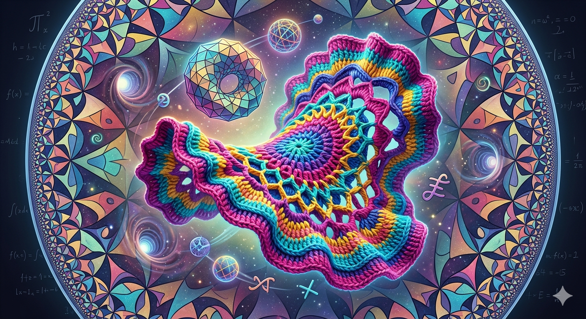

Links de Geometría Hiperbólica

Representación visual abstracta de estructuras y simetrías espaciales generado por gemini-nanobanana2.
Fundamentos y Postulados
Postulados de Euclides:
Ver en Wikipedia
Representaciones del Espacio y Curvatura
Mercator:
Proyección y representación del espacio.
Curvatura:
Ver la presentación:
Geometría Diferencial Discreta (PDF)
Teselaciones:
Hyperbolic Tiling in 3D
Material Audiovisual y Portales
Video con explicaciones hiperbólicas:
Ver en YouTube
3:00
Crochet squares
5:00
Animation, different models
9:00
Fórmulas
Video de portales no euclidianos:
Ver en YouTube
Strange video of spherical geometry:
Ver en YouTube